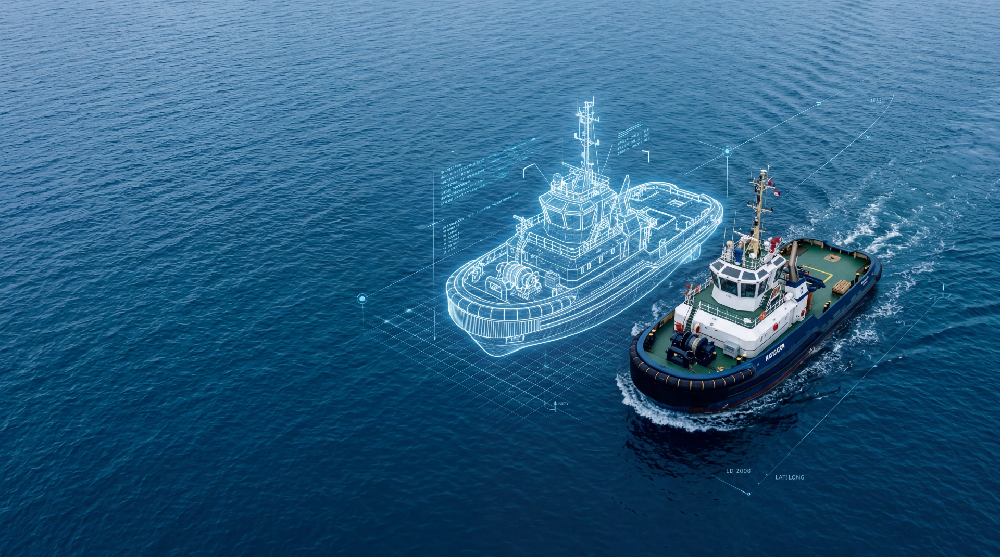
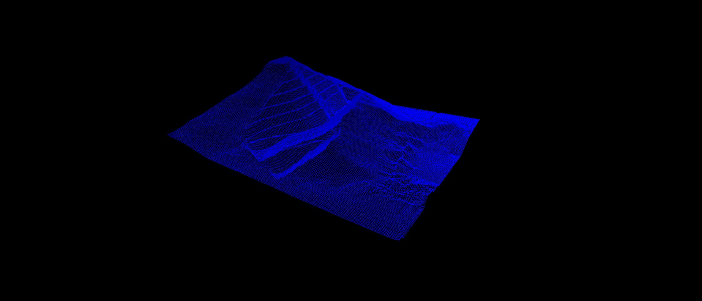
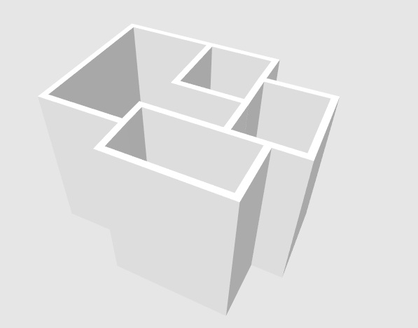
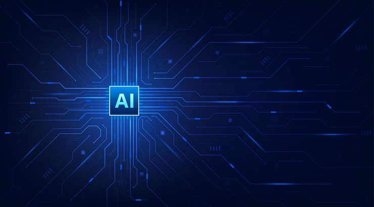

Madjid Goudarzi
Applied AI & Data Engineering Portfolio
Bridging Industrial Operational Data, Spatial Computing & Enterprise AI Pipelines.
Bridging Complex Engineering & Data Infrastructure
I design and build production-grade AI architectures, data engineering pipelines, and industrial automation solutions. My work transforms raw, chaotic domain data into actionable intelligence and operational digital twins.
From complex marine vessel tracking to automated architectural layout recognition and enterprise search, each project is built around reliability, domain-specific requirements, and modern AI integration.

From Raw Satellite Data to Industrial AI
A 6-year engineering journey building an Operational Data Engineering Layer for 70+ Offshore Support Vessels (OSV). This system bridges the gap between chaotic satellite data and enterprise ERP requirements, featuring dynamic cost allocation, three-way fuel reconciliation, and a Descriptive Digital Twin foundation compliant with ISO 23247 standards.

Geological Deposit Modeling & OpenGL Visualization Engine
A legacy 2D modeling software built with Delphi and OpenGL for tabular ore deposits (2007). Features spatial cross-section generation, resource boundary estimation, and real-time CAD-like rendering pipelines.

Automated Canvas Layout Detection & Cost Estimation Engine
An open-source web application for converting hand-drawn wall layouts and floor plans into interactive 3D spatial models with real-time material cost estimation APIs.

Hybrid Search Engine across 5 Million+ Scanned Documents
Designed a three-phase enterprise search engine pipeline leveraging Elasticsearch BM25, hybrid vector search, Knowledge Graph databases, and Model Context Protocol (MCP) to index and query millions of OCR-scanned pages efficiently.
Operational Monitoring & Subsurface Telemetry Integration
An integrated analytics system designed for operational monitoring and sub-surface telemetry tracking. Captures daily drilling/well operational logs, aggregates time-series data, and transforms raw engineering reports into actionable enterprise dashboards.
Core competencies in Applied Industrial AI and Data Engineering
Building resilient pipelines, JSON memory architectures, and RAG pipelines for complex enterprise contexts.
Applying machine learning algorithms to real-world industrial data, fuel reconciliation, and anomaly detection.
Elasticsearch, BM25 ranking, hybrid vector retrieval, and Knowledge Graph indexing for large-scale OCR docs.
OpenGL, WebGL, 2D/3D geometry processing, and automated layout generation engines.
Development in Python, C# .NET, Flutter, Delphi, and Raspberry Pi IoT edge routing.
Implementing client/server-side validation gates, satellite link optimization, and auditability protocols.